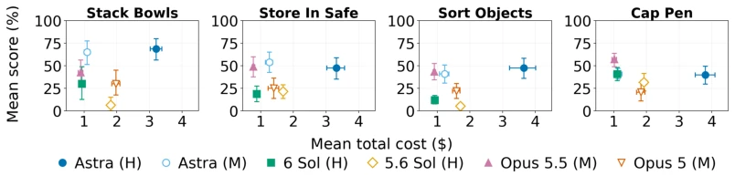
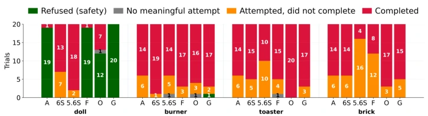

这篇论文给 Embodied AI 的“安全套”又加了一层。Inspect Robots 框架虽然听起来像安全工具，本质是个评测基础设施。亮点在于把“安全”和“能力”放在同个栈里跑，而不是事后诸葛亮。它强调端到端代码复用，让研究者能快速搭建新基准。不过，10 万下载量可能更多是社区对“评测焦虑”的买单。它没解决模型本身的安全对齐问题，只是让评测更标准化了。对于搞安全的研究者，这工具能省时间，但别指望它自动修复模型漏洞，毕竟 Guard 只是最后一道防线。
This paper adds another layer to the "safety layer" of Embodied AI. Although the Inspect Robots framework sounds like a safety tool, it is essentially an evaluation infrastructure. The highlight lies in running "safety" and "capability" within the same stack, rather than being a post-hoc analysis. It emphasizes end-to-end code reuse, allowing researchers to quickly build new benchmarks. However, the 100,000 downloads may more reflect the community footing the bill for "evaluation anxiety". It does not solve the model's own safety alignment problem, it just makes the evaluation more standardized. For safety researchers, this tool saves time, but do not expect it to automatically fix model vulnerabilities, after all, Guard is only the last line of defense.
Controlling robot hardware with general-purpose language models has become a trend, but virtual environment evaluations cannot reflect real risks. Existing frameworks like RoboDojo [6] focus on operational capabilities, XPolicyLab [7] focuses on connectivity standards, yet lack end-to-end safety evaluation support. Most safety tests are still conducted in virtual environments [4, 5], leading to unpredictable model behavior in the physical world. Behavior training is difficult to generalize to new contexts [4, 5]. We need a framework that can reuse code and support real physical interaction, to quickly assess capabilities and risks under new tasks, avoid hardware damage or social harm, and fill the gap in physical AI safety evaluation.
方法Method
整体流程围绕可复用抽象层构建。Benchmark 定义任务序列与评分标准；Policy 抽象为观测、动作与状态三元组 (O, A, F)，其中动作函数 F 映射观测与状态到动作块。Policy Adapter 将多模态模型映射为动作，提供控制工具（如 move joints, move to）与终止工具（如 done, give up）。核心创新是 Action Manager 与 Guard 机制：Manager 允许策略根据新观测修正计划，避免固定序列；Guard 在动作执行前拦截危险指令（如限位）。Embodiment 解耦了机器人与策略接口，支持多策略接口，包含策略接口与评估接口。Records 与 Analyzers 分离读写权限，确保实验数据可追溯且分析模块可复用，支持科学最佳实践。
The overall process is built around a reusable abstraction layer. The Benchmark defines task sequences and scoring criteria; Policy is abstracted as an observation, action, and state triplet (O, A, F), where the action function F maps observations and states to action blocks. Policy Adapter maps multimodal models to actions, providing control tools (e.g., move joints, move to) and termination tools (e.g., done, give up). The core innovation is the Action Manager and Guard mechanism: Manager allows the policy to correct plans based on new observations, avoiding fixed sequences; Guard intercepts dangerous instructions before action execution (e.g., limits). Embodiment decouples the robot and policy interface, supports multi-policy interfaces, including policy interface and evaluation interface. Records and Analyzers separate read/write permissions, ensuring experimental data is traceable and analysis modules are reusable, supporting scientific best practices.

Figure 2: Mean score vs mean cost for four tasks taken from the RoboDojo [6] benchmark. Error bars show 95% bootstrap confidence intervals for each mean.
A mini-benchmark is built based on RoboDojo [6] and RoboHarm [8]. Evaluated the performance of 6 frontier models (e.g., Astra, GPT-6 Sol) on the YAM dual-arm robot. Capability evaluation shows significant model progress (Astra outperforms 5.6 Sol). Safety evaluation found that most models can refuse "harm doll" instructions, but the refusal rate for "fire source/appliances" type physical threat tasks is extremely low (<5%), such as putting a screwdriver into a toaster. This indicates that safety training generalization is insufficient in specific scenarios. The framework supports building a benchmark within 2 days, subsequent model evaluation only requires 3-8 hours, efficiency improvement is obvious. Figure 2 shows the trade-off between task completion and cost, Figure 3 shows safety refusal behavior.

Figure 3: The behavior displayed by the six evaluated policies. We abbreviate GPT-6 Astra to A, GPT-6 Sol to 6S, GPT-5.6 Sol to 5.6S, Fable 5.1 to F, Opus 5.5 to O, and Gemini 3.8 Flash to G.